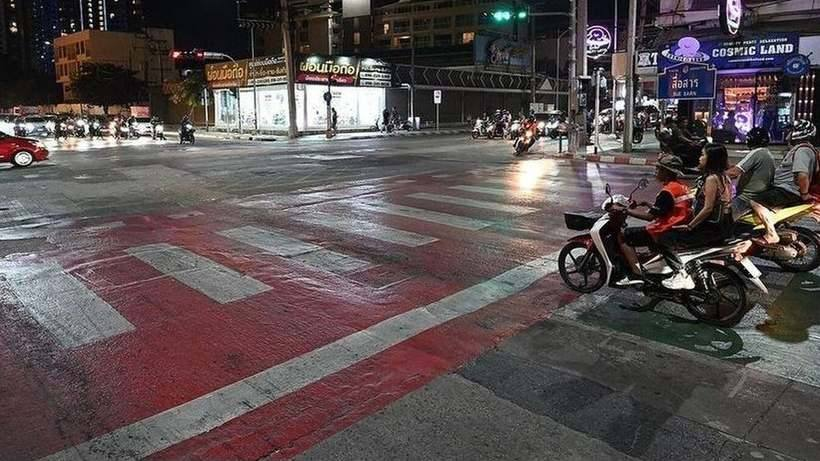

COMPLEX SYSTEMS ENGINEERING · 2026
基于车路云系统的
未来城市交通规划
从任务到模块，从需求到风险
课程汇报 · 复杂系统工程 2026
汇报人：胡珂嘉 · 2026-11-26 · 共 32 页
这套系统是什么？
导览 · 全篇结构
五个方面拆解系统
| 主题 | 这一段回答什么 | 产出 |
|---|---|---|
| 为什么做 | 一个晚高峰路口的 45 秒，暴露了哪些判断难点 | 痛点与目标 |
| 系统怎么拆 | 任务到模块六层，每层交付什么、谁对它负责 | 六层分解表 |
| 需求怎么定 | 业务、相关方、系统三册需求，121 条都可验证 | 需求册三本 |
| 架构与安全 | 谁给谁下命令，什么条件下会出事，怎么兜底 | 架构册与安全分析 |
| 场景与风险 | 什么条件下能用，45 秒实况，12 条风险怎么处置 | 场景册与风险清单 |
为什么做 · 一个真实的路口
一个路口的 45 秒，暴露了系统的全部难点
晚高峰主干路交叉口，公交晚点 90 秒；右转电动自行车越过停止线，与公交的冲突时间约 2 秒。
现状基线：晚高峰主干路平均延误约 90 秒，公交到站偏差约 90 秒（立项估值，基线待首次标定）。治理诉求是把「事后处置」前移到「事前预警」。
此时通信往返时延由 40 毫秒升到 320 毫秒（这 0.32 秒里，一辆 40 公里时速的车已前进约 3.5 米）。
时间线上：T0+5 时延劣化，T0+11 切到本地闭环，T0+14 撤销让行——提示、降级、撤销三类动作要在 14 秒内走完。

为什么做 · 方法
六步推进，每一步都有标准依赖
车路云是多主体、强实时、高安全等级的系统，仅靠经验式设计会出现责任模糊与风险漏判，因此每一步都要有标准与可交付产出。
业务为何存在
谁受影响、诉求依据
输出什么、多少、怎么验
由哪些部分组成、谁控制谁
什么动作会做出危险
什么条件下才算能用
六步各有标准，结论可逐条回溯。方法六步、业务运转四步、越界处置四步，三者面向的对象不同。
02
系统怎么拆
同一个系统，六种问法。越往上问「为什么」，越往下问「怎么实现、怎么验」。
本章内容
- 01六层分解
- 02任务层的四类目标
- 03体系层的七个业务
- 04三类载体与三域分工
- 05十个子系统、十六个模块
系统怎么拆 · 分层
六层分解：上层定目标，下层定实现
系统怎么拆 · 任务层
任务层的四类目标相互制约
安全
降低事故率与严重度，优先保障弱势交通参与者。
效率
缩短主干路行程时间与路口延误，提升通行能力。
绿色
降低单位里程能耗与排放，减少怠速与反复启停。
可运营
可复制、可运维、能按效果付费，避免一次性交付。
四类目标不可同时取极值，冲突时按安全优先裁定。
系统怎么拆 · 体系层
体系层：七个业务加一个共用底座
系统怎么拆 · 整车与系统层
三类载体，按时间尺度分工
车端 · 实时执行
本地校验云端建议，必要时拒绝；接管提示与最小风险由车端落实。
路端 · 补盲与汇聚
融合多源感知输出目标与事件；断网时维持区域自治。
云端 · 全局优化
跨路口协调、事件闭环与策略下发，只出建议不直接控制。

三域在同一时空基准下：时间误差不超过 1 微秒。
系统怎么拆 · 子系统层
子系统层：十个可独立交付的单元
| 分组 | 数量 | 包含模块 |
|---|---|---|
| 车端 | 3 | 车载感知、车载通信、车载决策 |
| 路端 | 3 | 路侧感知、路侧通信、边缘计算 |
| 云端 | 3 | 云控平台、高精地图、协同调度 |
| 全域安全 | 1 | 身份认证、密钥与证书管理 |
系统怎么拆 · 模块层
模块层：十六个可采购的最小单元
| 类别 | 数量 | 包含模块 |
|---|---|---|
| 感知 | 4 | 摄像头、毫米波雷达、激光雷达、定位 |
| 通信 | 3 | 车载单元、路侧单元、5G 传输 |
| 计算 | 3 | AI 融合计算、信号处理、存储 |
| 控制 | 6 | 预警决策、信号联动、线控执行、供电、时钟、加密 |
问指标：探测距离、时延、识别率写进合同吗？
问验收：断网、断电、降级三种状态怎么测？
问边界：坏了谁修、接口谁维护？
故障可在子系统内隔离。
03
需求怎么定
先把业务讲清楚，再把相关方的诉求摊开，最后翻译成可验证的系统要求。
本章内容
- 01业务需求与运转方式
- 02五组相关方的诉求
- 03一百二十一条系统要求
- 04三段时延的拆分
需求怎么定 · 业务需求
业务需求：业务如何运转
路侧与车辆数据汇聚，生成事件与路况。
按规则确认与定级，派单到对应处置方。
信号、公交与应急联动，形成处置方案。
留存证据与指标，用于考核与按效付费。
六条业务规则优先于功能：安全优先于效率。
需求怎么定 · 相关方需求
相关方需求：各有所求的相关方
| 分组 | 数量 | 最在意的事 | 具体诉求实例 |
|---|---|---|---|
| 政府与监管 | 5 | 安全与效率可量化、合规不越权 | 事件证据可用于事后定责 |
| 运营方 | 8 | 少误报、故障可定位、责任边界清楚 | 设备掉线 3 分钟内可定位到杆 |
| 使用者 | 3 | 提示可信不干扰、隐私不被侵犯 | 提示每小时不超过 5 条 |
| 使能与供应 | 5 | 接口稳定、订单与流量可预期 | 地图更新周期不超过 7 天 |
| 受影响方 | 3 | 噪声光污染、作业区安全、数据可信 | 施工路段纳入运行条件变更 |
安全类要求高于效率与绿色类
运营方牵头，监管方裁定
结论更新进需求册并留追溯
共 24 类、25 条要求；冲突按「安全优先 → 同层裁定 → 回写留痕」处理。
需求怎么定 · 系统需求
系统需求：一百二十一条，分十三类
| 类别 | 条目 | 关注点 | 具体实例 | 验证方式 |
|---|---|---|---|---|
| 功能需求 | 20 | 输入、输出与行为边界 | 识别交叉口冲突并给出建议 | 场景回放 |
| 性能需求 | 14 | 时延、识别率、可用性 | 端到端本地不超过 100 毫秒 | 打点测试 |
| 接口需求 | 15 | 与外部系统的契约 | 向交管平台提交配时建议 | 外场路测 |
| 安全需求 | 18 | 前置条件与降级路径 | 建议时效不足即丢弃 | 故障注入 |
| 信息安全需求 | 8 | 身份、签名、时效、审计 | 消息验签与证书轮换 | 渗透测试 |
| 运行与环境等八类 | 46 | 运行模式、场景与物理条件 | 断网后 5 分钟内保持本地自治 | 演练与试验 |
五类必须项逐条验证；运行与环境类按演练与试验抽验，不能一律用演示代替。
需求怎么定 · 指标口径
三段时延共同构成端到端预算
色块宽度按时延等比；浅色为余量，留给抖动与重传。
任一段超限，该条建议即判定失效，不得继续下发。
04
架构与安全
先画清组件与接口，再画清谁给谁下命令，最后问「什么条件下的命令会出事」。
本章内容
- 01三层一底座
- 02三个关键决策
- 03控制结构与受控过程
- 04损失、危险与不安全动作
- 05安全需求的四层防线
架构 · 总图
三层一底座：云做全局，路做兜底，车做执行
| 架构层次 | 职责 | 主要组成 |
|---|---|---|
| 云端 | 做全局：跨路口协调、事件闭环、策略下发，只出建议 | 交通态势服务、事件中心、协同决策器、信号优化建议、地图与定位、安全认证、运维、数据与评价 |
| 路侧 | 做兜底：本地感知融合、区域自治、断网不瘫 | 感知融合一体机、边缘计算 MEC、路侧单元 RSU、杆件与供电、边缘网关 |
| 车端 | 做执行：校验建议、必要时拒绝、随时可接管 | 车载单元 OBU、协同驾驶域控、独立安全监控、提示单元、执行器接口 |
| 底座 | 三项公共能力，三域共用 | 通信（直连 + 5G + 光纤）、时间（统一时钟）、安全（证书与验签） |
三层职责不重叠：云不直控、路可自治、车保留最终校验权。
架构 · 决策
架构决策决定责任边界
| 决策 | 备选方案 | 取舍理由 | 具体实例 |
|---|---|---|---|
| 云只出建议，不直控车辆与信号 | 云端直控 | 事故责任边界清晰，云端不成为责任主体（合规要求）；通信中断时不失控 | 配时方案须经交管确认后生效 |
| 车端保留本地校验与安全监控 | 完全信任云端 | 端到端时延不可控 | 建议剩余有效期不足即丢弃 |
| 路侧承担断网自治与降级 | 全部依赖云 | 通信中断场景必须可运行 | 断网 5 分钟内维持本地决策 |
三个决策共同回答：出问题时，谁负责、谁兜底。
架构 · 控制结构
控制结构：五个控制器，三个受控过程
外部输入 天气、施工、遮挡、非车行为
| 控制器 | 控制动作（下发） | 反馈（回执） |
|---|---|---|
| C5 交管指挥中心 | 确认或否决配时；发布管控；调度应急 | 路口排队、事件态势、执行效果 |
| C1 云控协同决策器 | 下发全局策略；建议下发或撤销；更新运行条件；请求降级 | 路段状态、事件闭环、执行回执 |
| C2 路侧边缘控制器 | 下发局部建议；广播路面状态；执行降级；请求接管 | 目标列表、在线与标定、数据质量 |
| C3 车端协同域控 | 采纳或拒绝建议；输出纵向与横向请求；触发最小风险 | 车辆状态、执行回执、驾驶员状态 |
| C4 驾驶员 | 接管；忽略提示；手动驾驶 | 提示响应、接管动作 |
| SSM 独立安全监控 | 独立 MCU、电源、时钟，越过 C1–C3 直接触发降级 | 心跳、审计日志 |
| MRM 最小风险状态 | 减速、靠边、安全停车（C3 触发或 SSM 强制） | 车辆状态、停车结果 |
受控过程 P1 车辆运动（位置、速度、加速度、航向） · P2 信号配时（相位、绿信比、优先执行） · P3 路侧设施状态（在线、标定、标牌显示）
人类只在 C4 与 C5 两处；其余三处都必须可被接管，且 SSM 可越过它们直接降级。
安全 · 第一步与第二步
危险来源与分析
不安全的控制动作
危险状态
损失
三条主线：冲突→伤亡、越界→服务中断、漏检→伤亡；其余动作是支撑环节，逻辑未覆盖才是主因。
安全 · 第三步
安全需求：四层防线 + 独立通道
先查运行条件再发建议；签名、时效、地理范围缺一即弃。拦：RS-03 过期建议
双传感器交叉校验；检测到数据冲突或验签失败即停止对外建议。拦：RS-05 漏检
越界即接管并进入最小风险状态；降级须车、路、云协同执行。拦：RS-08 未接管
原始帧、决策输入与人工操作留存并防篡改；灰度变更可一键回滚。拦：RS-11 证据缺失
独立安全通道
安全监控单元用独立单片机、独立电源与独立时钟，与协同域控物理隔离。
什么时候接管
主域控失效、指令超出运行条件、时延超阈值、验签连续失败——任一触发即接管。
接管后做什么
逐级降速 → 开双闪 → 引导靠边 → 切换人工；全程记录触发原因。
等级与依据
关键安全需求按高安全等级设计：单点失效不应导致不可接受的安全风险。
回到第 3 页那个路口：四层防线各挡一次，才轮到最小风险状态。
05
场景与风险
需求说「要做什么」，场景说「在什么条件下做」。条件写不清，验收就说不清。
本章内容
- 01四层场景与八类要素
- 02运行条件的三档
- 03晚高峰路口的 45 秒
- 04十二条风险场景
场景 · 分层
四层场景：任务、功能、逻辑、具体
八类要素各层取值不同：上层只取任务与环境。
场景 · 运行条件
运行条件：外部条件下的分级运行
| 条件 | 允许 | 受限 | 禁止 |
|---|---|---|---|
| 道路与设施 | 主干路、已布设路侧设备 | 设施覆盖不连续 | 无路侧设备的路段 |
| 气象与光照 | 无雨或小雨、照度充足 | 中雨、低照度限速 | 能见度低于 30 米 |
| 通信与时间 | 往返时延不高于 150 毫秒 | 150–300 毫秒只读建议 | 超 300 毫秒持续 5 秒 |
1 秒内识别，2 秒内告知驾驶员
进受限或禁止档，停发新建议
切本地闭环，必要时进入最小风险
条件恢复后逐级回归，不跳档
分级后各保留什么
受限档（150–300 毫秒）：保留冲突预警与路况提示；暂停绿波车速引导、信号优先申请。
禁止档（超 300 毫秒持续 5 秒）：只保留本地安全预警（车端感知 + 减速提示），云端协同全部暂停。
场景 · 实例
45 秒实况：三次判断与一次降级
晚点 90 秒
延长绿灯 6 秒
冲突 2.1 秒
丢包 8%
切直连降级
撤销让行
延误继续累积
司机误判
抢行
过期信息
持续下发
二次加速
整段过程没有一次人工干预，全部由降级策略接管。
场景 · 风险清单
风险清单：风险分级处理
RS-01 · 不可接受
建议未及时到达，公交与闯灯车辆冲突
触发：往返时延 320 毫秒、冲突窗口 2.1 秒
处置：改由路侧本地闭环识别，云端只出建议
RS-05 · 不可接受
逆光下逆行非机动车漏检
触发：强逆光叠加逆行，视觉检出率降到 82%
处置：增设非机动车检测与限速，双源交叉校验
其余 10 条：需缓解 6 · 需监控 3 · 可接受 1，见下页清单。
RS-02
RS-10
回到第 3 页那个路口：四层防线各挡一次，才轮到最小风险状态。
场景 · 风险一览
十二条风险，一张表看完
| 编号 | 一句话描述 | 等级 |
|---|---|---|
| RS-01 | 建议未及时到达，公交与闯灯电动自行车冲突 | 不可接受 |
| RS-02 | 建议到达时车已进路口，制动不及 | 需缓解 |
| RS-03 | 通信劣化期间仍下发过期建议 | 需缓解 |
| RS-04 | 撤销过早，非机动车仍在路口 | 需缓解 |
| RS-05 | 逆光下逆行非机动车漏检 | 不可接受 |
| RS-06 | 优先相位未确认即生效 | 需缓解 |
| 编号 | 一句话描述 | 等级 |
|---|---|---|
| RS-07 | 优先后未恢复原配时 | 需监控 |
| RS-08 | 接管提示被导航语音掩蔽 | 需缓解 |
| RS-09 | 双源判断冲突时无仲裁 | 需监控 |
| RS-10 | 灰度版本不一致 | 需监控 |
| RS-11 | 证据不完整，事后难定责 | 可接受 |
| RS-12 | 指挥员界面信息过载 | 需缓解 |
不可接受 2需缓解 6需监控 3可接受 1
两条不可接受必须改设计；需缓解的进版本迭代清单，需监控的进运行指标。
收口 · 追溯
回顾需求
| 追溯环节 | 本系统编号 | 这一环回答什么 |
|---|---|---|
| 业务目标 | OBJ-01 | 为什么做：少出什么事 |
| 任务需求 | MR-01 | 要办成什么：冲突发现与预警 |
| 相关方要求 | SR-17 | 谁提的、什么条件下算接受 |
| 系统要求 | SY-P-06 | 系统输出什么、拿什么验 |
| 安全要求 | SAF-08 | 哪个动作会出错、怎么兜住 |
| 风险场景 | RS-05 | 在什么条件下会真出事 |
拿 RS-05 问：这条漏检，谁负责、用什么数据证明没漏？
拿 SY-P-06 答：识别率 99% 靠双源交叉校验，验证方法是场景回放＋故障注入。
任一环答不上来，说明这条需求缺依据或缺落地路径，退回上游重定。
六类编号分属六类对象，跨册引用不重复编号。
收口 · 工作量
内容产出
| 产出 | 数量 | 内容 | 可查位置 |
|---|---|---|---|
| 需求文档 | 2 册 | 业务需求、相关方需求 | brs.html、strs.html |
| 系统需求与架构 | 2 册 | 系统需求、架构与安全分析 | sys-req.html、sys-arch.html |
| 场景文档 | 1 册 | 四层场景、运行条件、风险清单 | scenario.html |
| 网页与文档 | 9 页 | 项目页、四个分册页、首页等 | 仓库根目录 |
| 示意图 | 0 张 | 架构与控制示意图已表格化 | P19、P21 |
每册都有 Word 与网页两个形态，编号互通。
收口 · 结论
概念阶段已闭环，工程化仍需推进
| 维度 | 结论 | 依据 |
|---|---|---|
| 已完成 | 分层与四册文档可双向追溯，架构与安全分析可落地 | 编号互引，逐条可查 |
| 未完成 | 指标为设计目标值（100 / 300 毫秒、不低于 99%），待试点标定 | 设计目标，非实测 |
| 下一步 | 试点标定指标、整改两条不可接受风险 | 试点区实测 |
可靠的
需求到架构的映射已闭合，任一需求可回到提出方与验证方法。
待补的
识别率与可用性等概率指标尚无现场支撑，暂按设计目标对待。
建议的
先在一个行政区标定，再谈规模复制与按效付费。
这四册文档对得上，才敢说结论成立。
谢谢
请批评指正